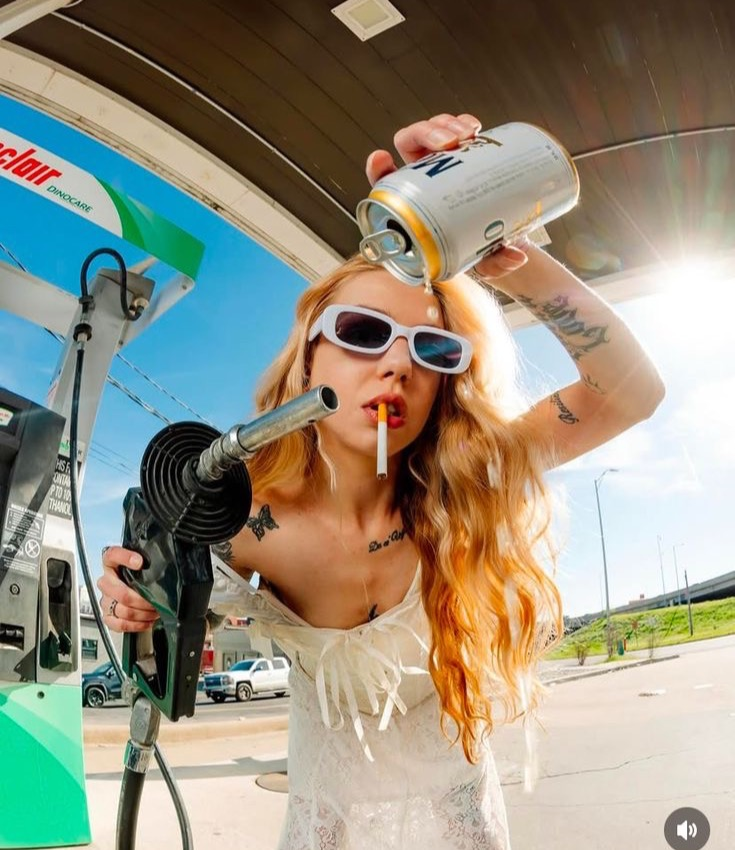

The retro petrol station
Photo: via Pinterest.
We take over a decommissioned petrol station, or build one from scratch in a private venue: illuminated canopy, neon sign, concrete forecourt, period pumps. Safety first: no partying next to real, full fuel tanks.
The venue already tells the story: freedom, sunshine, the open road. We simply dress it in the collection's colours, from the logo on the canopy to the attendants' uniforms.
The sunglasses counter

Photo: @quinlyntoshphoto and @_itselectric, via Pinterest.
In the station's little shop, sunglasses replace the snacks: lined up in chocolate bar displays, hung like packets of crisps, tucked into a chiller by the till.
Guests browse, try on, pick, and check out. A branded receipt as a keepsake, and the collection becomes a very chic impulse buy.
Branded pumps and objects
YSL Beauté activation. Photo: via Pinterest.
Each pump carries a model from the collection, its name displayed like a price per litre. Around them, painted jerrycans, logo-stamped oil cans and road maps reworked into a lookbook.
These objects set the scene, then become gifts and content props. A branded jerrycan is something people keep, and post.
YSL Beauté has already dared it: red fuel pumps bearing its logo, with its lipsticks on show in the pump window, and a gold nozzle for the photo. Proof that an everyday object, cleverly hijacked, becomes a brand signature.
The car wash photocall
Photo: via Pinterest.
The car wash rollers spin, coloured foam flies, and guests walk through, sunglasses on. The most fun photocall of the season.
At night, the same car wash becomes a stage: a mini runway under the brushes, or a light show in the foam. Guaranteed impact, and nobody gets soaked unless they want to.
Content designed for Reels
Photo: via Pinterest.
Photo: via Pinterest.
Hijacking an everyday place is exactly what works on Reels right now: the setting is instantly recognisable, and the surprise comes from a product that has no business being there. A pair of sunglasses on a chewing gum stand stops the scroll.
So we design the station like a set: golden-hour light, scouted angles, neons tuned for the camera and a ready-made shot list for invited creators. The result: Reels in line with your campaign, filmed in a setting you won't see anywhere else.
The sunset after-party
Photo: @quinlyntoshphoto, via Pinterest.
As the sun goes down, a DJ sets up on the forecourt, between the pumps. A fleet of classic cars is parked at an angle, bonnets up, ready for photos and short spins.
Sunglasses stay on until nightfall, cool kids rules. This is the moment the brand becomes a summer people talk about.
And the gifting?
We finish with a petrol station kraft paper bag: the chosen pair in a branded case, a mini jerrycan, a road map, retro sweets and a hand-written receipt. The road trip to take home, and a gift made to be unboxed on camera.
Frequently asked questions
How do you organise an eyewear or accessories launch?
Start from the collection's world, choose a venue where guests can try on and play with the products rather than look at them in a display case, invite press and content creators, and design every space to produce images. A late-afternoon format with an after-party works very well for sunglasses.
Why launch a product in an unexpected everyday venue?
Because the mismatch surprises: the place is instantly recognisable, the product creates the twist, and guests leave with a story to tell. It's also great ground for content that stands out from the usual showrooms.
What format works best for press and influencers?
A small press slot at the start of the event, for interviews and try-ons in peace, followed by a bigger party with content creators. We prepare a photo trail, a shot list and gifting designed for unboxing. The budget is built on a quote detailed line by line.